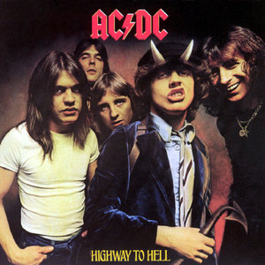
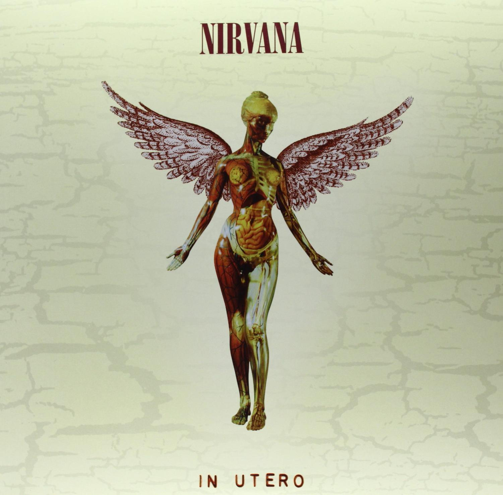

| Album Cover |
Band |
Year |
Genre |
Description |
Price |
|

|
AC/DC |
1979 |
Hard Rock |
Highway to Hell is the sixth studio album by Australian band AC/DC, released on July 27, 1979.
It is the first of three albums produced by Robert John "Mutt" Lange and is the last album featuring
lead singer Bon Scott, who died on 19 February 1980. |
36.00$ |
|
|
Mötley Crüe |
1981 |
Heavy Metal, Glam Metal, Glam Punk |
Too Fast for Love is the debut studio album by American heavy metal band Mötley Crüe.
The first edition of 900 copies was released on the band's original label Leathür Records. Elektra Records
signed the band the following year, at which point the album was remixed and partially re-recorded. This
re-release, with a different track listing and slightly different artwork, has become the standard version
from which all later reissues derive. While the album only reached number 77 on the Billboard 200 album chart
in the United States, it would ultimately reach platinum status. |
40.00$ |
|

|
Nirvana |
1993 |
Grunge, Noise Rock, Alternative Rock, Punk Rock |
In Utero is the third and final studio album by the American rock band Nirvana,
released on September 21, 1993, by DGC Records. After breaking into the mainstream with their
second album, Nevermind (1991), Nirvana hired Steve Albini to record In Utero, seeking a more
complex, abrasive sound that was reminiscent of their work before Nevermind. Although frontman
and primary songwriter Kurt Cobain claimed that the album was "very impersonal", many of its songs
contain heavy allusions to his personal life and struggles, expressing feelings of angst that were
common on the band's previous album. Critics praised the album’s raw, unconventional sound and Cobain's
lyricism. The album is certified 5× platinum by the Recording Industry Association of America (RIAA) in
the US and has sold 15 million copies worldwide. It was the final Nirvana album before Cobain's suicide in 1994. |
45.00$ |
|
|
Def Leppard |
1983 |
Glam Metal, Hard Rock, Heavy Metal |
Pyromania is the third studio album by English rock band Def Leppard,
released on 20 January 1983 through Vertigo Records in the UK and Europe and through
Mercury Records in the US. The first album to feature guitarist Phil Collen who replaced
founding member Pete Willis, Pyromania was produced by Robert John "Mutt" Lange. Pyromania
charted at No. 2 on the Billboard 200, No. 4 on the Canadian RPM Album chart, and No. 18 on
the UK Albums Chart. Selling over ten million copies in the US, it has been certified diamond by the RIAA. |
46.00$ |

|
Led Zeppelin |
2007 |
Hard Rock, Heavy Metal, Blues Rock, Folk Rock |
Mothership is a compilation album by English rock band Led Zeppelin, released by Atlantic
Records and Rhino Entertainment in the United Kingdom, and later in the United States. It was released
on the same day that Led Zeppelin's entire catalog became available in digital stores, including the iTunes Store.
The songs included were chosen by the surviving members of Led Zeppelin, Robert Plant, Jimmy Page, and John Paul Jones,
and represent the band's eight studio albums. The album also debuted at #7 on the US Billboard 200 chart, selling about
136,000 copies in its first week. The album has sold over 2.1 million copies in the U.S. and over 4.5 million copies worldwide,
leading to it being certified 2× Platinum by the RIAA. |
60.00$ |

|
Pink Floyd |
1979 |
Progressive Rock, Art Rock, Progressive Pop |
The Wall is the eleventh studio album by the English rock band Pink Floyd, released on 30 November 1979
by Harvest/EMI and Columbia/CBS Records. It is a rock opera about Pink, a jaded rock star who constructs a psychological
"wall" of social isolation. The album was a commercial success, topping the US charts for 15 weeks and reaching number
three in the UK. It initially received mixed reviews from critics, many of whom found it overblown and pretentious, but
later received accolades as one of the greatest albums of all time. The Wall was the last album to feature Pink Floyd as
a quartet; the keyboardist, Richard Wright, was fired by Waters during production but stayed on as a salaried musician.
The Wall is one of the best-known concept albums. With over 30 million copies sold, it is the second best-selling album
in the band's catalog (behind 1973's The Dark Side of the Moon), the best-selling double-album of all time, and one of the
best-selling albums of all time overall. In 2000, it was voted number 30 in Colin Larkin's All-Time Top 1000 Albums. In 2003,
2012, and 2020, it was included in Rolling Stone's lists of the "500 Greatest Albums of All Time". |
150.00$ |
|
|
Black Sabbath |
1970 |
Heavy Metal |
Paranoid is the second studio album by English heavy metal band Black Sabbath, released on 18 September 1970
by Vertigo Records in the United Kingdom and on 7 January 1971 by Warner Bros. Paranoid is widely regarded as one of the
greatest and most influential heavy metal albums of all time, often cited as a key influence for the development of the genre
as well as one of its earliest albums. Paranoid was ranked number one on Rolling Stone‘s list of the "100 Greatest Metal Albums
of All Time" in 2017 and number 139 on its “The 500 Greatest Albums of All Time” list in 2020. |
90.00$ |
|
|
Beastie Boys |
1986 |
Rap Rock, Hip-Hop |
Licensed to Ill is the debut studio album by the American hip-hop group Beastie Boys.
It was released on November 15, 1986, by Def Jam and Columbia Records. The album became the first
rap LP to top the Billboard album chart and was the second rap album to become a platinum album. It
is one of Columbia Records' fastest-selling debut records to date and was certified Diamond by the
Recording Industry Association of America in 2015 for shipping over ten million copies in the United States.
The album received critical acclaim for its unique musical style, the chemistry between the group members,
and their stylized rapping. Since its release, Licensed to Ill has been ranked by critics as one of the greatest
hip-hop and debut albums of all time. |
30.00$ |